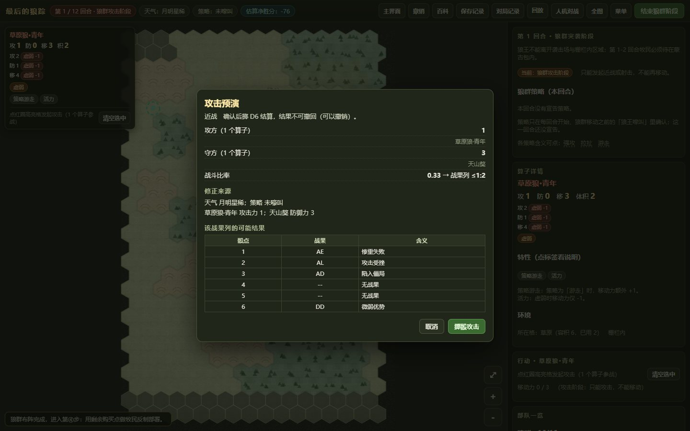
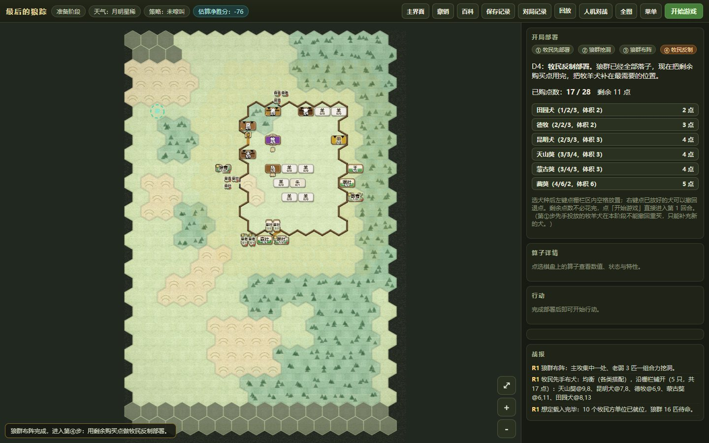
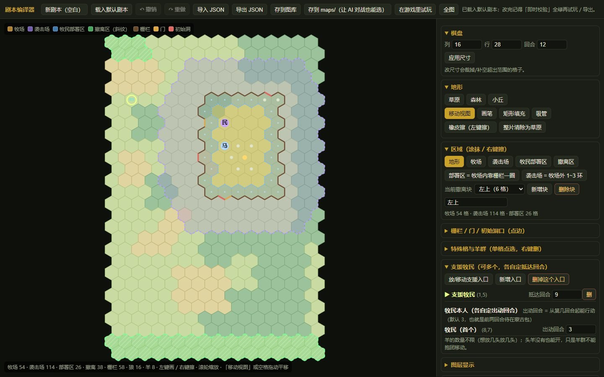
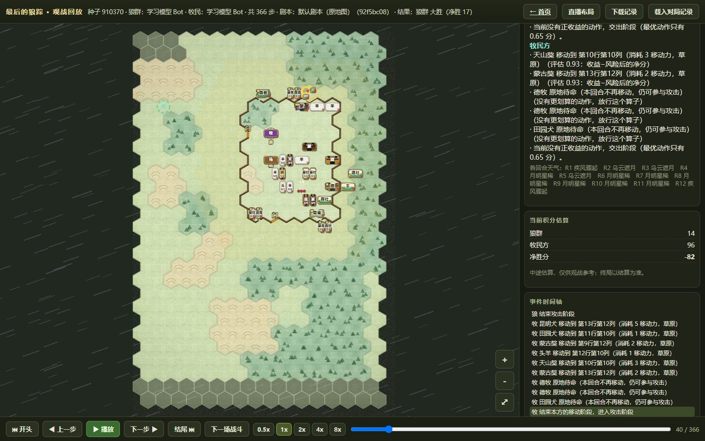

把纸面兵棋做成能跑、能测、能联机的程序
一套纸面规则怎么落到状态机、AI 和自动化测试上，以及其中最烦的那些边界情况：骰子、天气、回放，还有一次「任务下发故障」的排障记录。
一、从一张纸开始：规则先能被裁定
《最后的狼踪》最初是一套纸面规则：16×28 的六边形地图，12 个回合，狼群从洞口进场、穿过牧场猎杀牲畜、带着战果从撤离区离开；牧民守畜、买犬、封堵洞口。两边目标不对称，信息也不对称。
纸面规则能自洽，不代表程序能执行。写给人看的规则允许「酌情处理」，写进代码就不允许——每个「酌情」最后都是一条 if 或一次查表。所以动手之前我先做了一份裁定表：每条规则的出处、争议怎么裁定、代码落在哪、改过几次，都写在里面。这不是形式主义：后来每次改数值，争议都能直接翻到那一页，而不是重新吵一遍。
规模上，这个项目最后有 167 个 JS / MJS 文件、60 次提交；除主界面外还有剧本编辑器、AI 对战平台、联机大厅和观战回放。
二、状态机：让「回合」变成可回放的事件
回合制规则最怕状态散落在界面里：界面看着对，换条路径就错。我的做法是把一局拆成明确的状态：准备（选边、部署）→ 回合开始（天气、策略）→ 行动阶段（移动、攻击、挖掘、撤离）→ 结算 → 回合结束，每一步都产出事件记录。回放不是重新算一遍，而是按事件流重放——这样才能保证「看到的」就是「发生过的」。
最麻烦的是战斗结算。一次近战先确认攻守双方，算战斗比率得到战果列，再掷 D6 查表：0.33 的比率落在 ≤1:2 列，掷出 1—6 分别对应 AE、AL、AD、无战果、无战果、DD 这类结果，各档的伤亡与推进都不一样。骰子必须可注入——测试要固定随机数，回放要复现同一场，所以随机种子进记录，命令行也能指定 --seed。
天气同样进战斗修正：月明星稀、乌云遮月、疾风骤起会给攻防不同加成；12 个回合的天气提前排成一条时间轴，打之前就知道后面几回合的天。

三、界面：规则、信息与操作的分寸
界面的第一原则是「别让玩家替程序记状态」。棋盘要能拖着看、滚轮缩放，算子上直接显示攻防移和体积；行动时给浮卡，把这次行动的消耗、目标格、可能结果摆出来。键位压到很少：左键选中、右键取消、滚轮缩放、空格结束阶段，再加上撤销和同格切换，基本覆盖一局的操作。
部署阶段做了「一键布阵」：同一套方案能复现同一套开局，这样比较两版 AI 权重时，变量只剩 AI，不包含手滑。

剧本编辑器是后来才补的：16 列 × 28 行 × 12 回合，地形（草地 / 树林 / 小丘）、区域（牧场 / 袭击场 / 部署区 / 撤离区）、栅栏与洞口都能直接刷；改尺寸会裁掉或补足超出范围的格子，牧场、袭击场、部署区各多少格实时统计。剧本还会存进图库，对局和回放都绑剧本——不绑剧本的回放没有意义。

四、AI：先能跑，再谈强
AI 分两层。一层是内置 Bot：对每个候选行动估收益和风险，取分最高的执行；难点不在公式，而在归因——把一次决策的分数拆开，才知道它是被距离、暴露度还是假动作影响的。另一层是「大模型上桌」：平台里填 API 地址和密钥，两个大模型自己打一局，或者一个大模型对一个 Bot。
给 AI 用的工具不止对战。Bot 教练台左边列出每个权重的含义和当前值，右边用固定种子跑几局测「技巧水平」；改完提交，后台写文件、改代码、跑测试，再把结果写回训练记录。战术总览则把「现在会什么、不会什么、什么其实不该用」分成已实现、有雏形、还没做、实测不建议四档——避免自己骗自己。
五、联机：先本地，再谈公网
联机没有一上来做公网。先做本地联机：账号与房间管理、开房、加入、观战；服务只监听本机，两个人同一台电脑或局域网就能打。不依赖第三方框架、主体只用 Node 内置模块，少一个依赖就少一类环境问题。
观战和直播是副产品：每个行动一步播，可以暂停、慢放、倒回、跳到下一场战斗，地图可缩放拖动；对局记录按种子、剧本、结果落盘，点回放直接开。做 OBS 直播只需要加一个浏览器源。

六、自动化测试：约 899 个检查项兜底
规则改一个数值，影响可能是几十场对局。手动点不现实，所以测试分三层：地图坐标与数值表（纯数据校验）、对局模拟（固定种子跑完整局）、回放保真（重放结果与原始对局一致）。现在有 30 个测试文件、约 899 个检查项，一条命令跑完；改规则或数值后必须回归，这是底线。
批量对照用 quickscore.js：同一批种子跑两套权重，比胜率和积分。测试的价值不是「证明我对」，而是把「不知道哪里变了」变成「知道哪条断言挂了」。

七、AI 协作与一次排障
这个项目大量用 AI 协作：我给子代理定角色、写派工模板、定验收口径，再让它们改代码。最有价值的一次是排查「任务下发故障」：某个环节的任务没有真的下发，表现出来却像规则算错。日志里没有明显异常，于是做 A/B 对照——保留和去掉可疑组件，各跑一批固定种子的对局，差异集中在某个分支；再顺着日志时间线回看，才定位到是下发链路的问题，不是规则本身。
这件事改了我两个习惯：一是让 AI 先产出可验证的中间物（日志、分数拆解、事件流），再谈改代码；二是验收口径必须写成能检查的断言，「看起来更聪明」不算验收。
限制也直说：AI 的平衡性还没调好，公网联机和回放分享没做，手机版能打开但操作仍按桌面键位设计。下一步先把剧本图库和分享补齐，再考虑公网。完整截图与系统构成在作品页：《最后的狼踪》不对称战术兵棋。